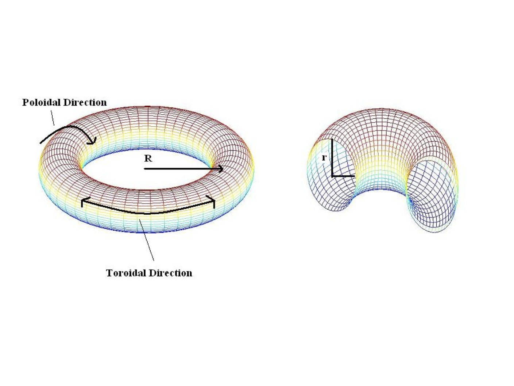

Island Coalescence This models an instability in a reduced 2D tokamak model. Here, we look at a thin annulus in the cross section of a large-aspect ratio tokamak. The magnetic field in the toroidal direction (going around the torus) is large and mostly constant. Therefore, we only consider the instabilities in the poloidal direction. An initial equilibrium is perturbed resulting in two peaks of current density coalescing together. The result is a reconnection of magnetic field lines and sharp spike in current density at the reconnection point. The following movies show this for a variety of parameters. R = Reynolds Number S = Lundquist Number |
 |
| 3D Parallel Results (simulations by Lei Tang on Frost: IBM Blue Gene/L, formerly at NCAR) |
2D Serial Results (Contour Plots) |